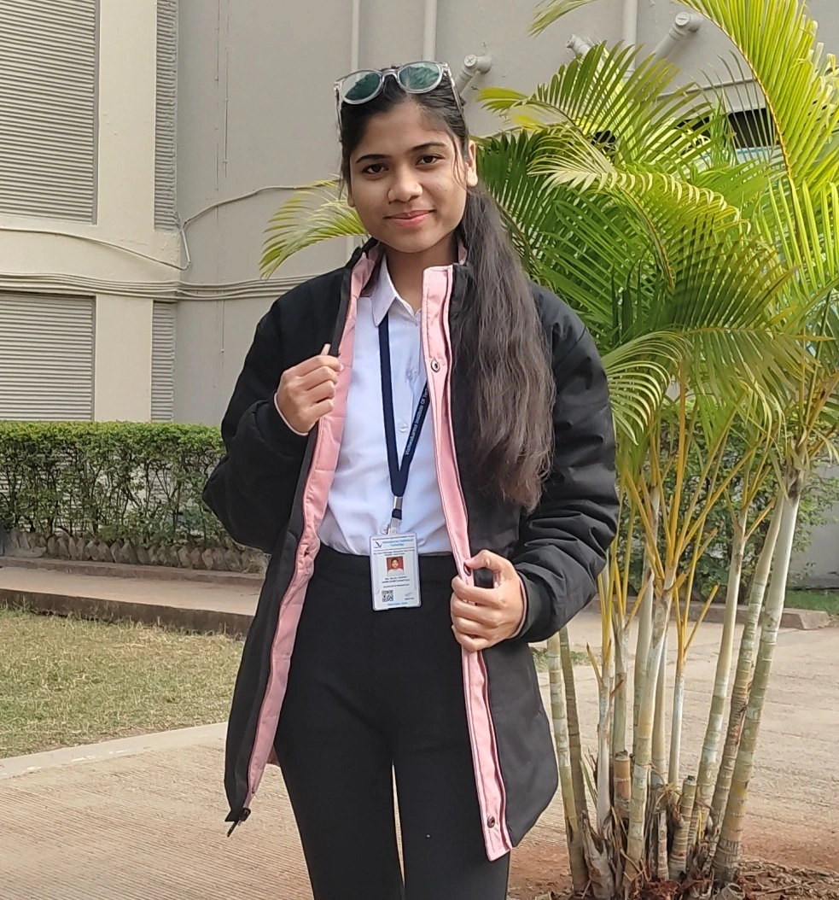

Shweta Ahire
Tech Voyager
Phone
Email
shweta.social9@gmail.com
Location
Pune Maharashtra
About Me
Hello! I'm Shweta Kantilal Ahire, a passionate and driven B.Tech student specializing in Artificial Intelligence and Machine Learning at Vishwakarma Institute of Technology, Pune (Year of Passing: 2026). My academic journey is rooted in a profound interest in technology, strengthened by a Diploma in Computer Technology from K.K Wagh Polytechnic, Nashik. Throughout my academic and personal experiences, I've cultivated a deep fascination with the ever-evolving world of technology, where each innovation holds the power to transform lives and industries. I am not just a learner but a proactive thinker who thrives on challenges that push the boundaries of knowledge. From developing dynamic projects to diving into real-world applications of algorithms, my approach to learning is hands-on and impact-driven. With a strong foundation in programming, problem-solving, and a creative flair for design, I strive to merge technical expertise with innovation. Beyond academics, I enjoy expressing creativity through sketching and designing, blending art with technology to explore new dimensions.
My ultimate goal is to contribute meaningfully to the tech world, where every line of code and innovation serves as a step toward shaping a smarter, more efficient future. Technologies like Artificial Intelligence, Machine Learning, and Human-Computer Interaction thrill me, as they offer endless possibilities for solving complex problems and enriching human life. I envision myself as a torchbearer in technology, actively bridging the gap between groundbreaking research and real-world applications. Whether by developing solutions that optimize industries, creating platforms that empower people, or mentoring future tech enthusiasts, my aspiration is to make a lasting impact. Serving the tech world is not just a goal—it's my purpose, driven by an insatiable curiosity and a relentless drive to innovate.
What I love Doing !!!

Graphic Designing
Graphic designing allows me to express creativity through visuals that communicate ideas effectively. I enjoy experimenting with design tools like Canva and Adobe Illustrator to create logos, posters, and UI elements. This hobby helps me merge artistry with technology, and I love crafting designs that leave a lasting impression..

Tech Problem-Solving Adventures
I am passionate about brainstorming and working on innovative technological projects across diverse domains. Whether it’s developing AI solutions, creating efficient algorithms, or exploring IoT systems, I enjoy diving deep into problems and finding creative, practical solutions. This hobby fuels my curiosity and sharpens my critical thinking skills.

Web Development
Web development fascinates me as it combines creativity and functionality. I enjoy designing interactive websites using HTML, CSS, JavaScript, and frameworks like Flask and React. Bringing ideas to life on the web, whether it’s a personal portfolio or a complex application, gives me immense satisfaction and a sense of accomplishment.

Sketching
Sketching is my way of blending imagination with precision. From intricate illustrations to abstract designs, sketching allows me to visualize and articulate ideas beyond words. It also serves as a stress reliever and enhances my attention to detail, which benefits my technical projects and designs.